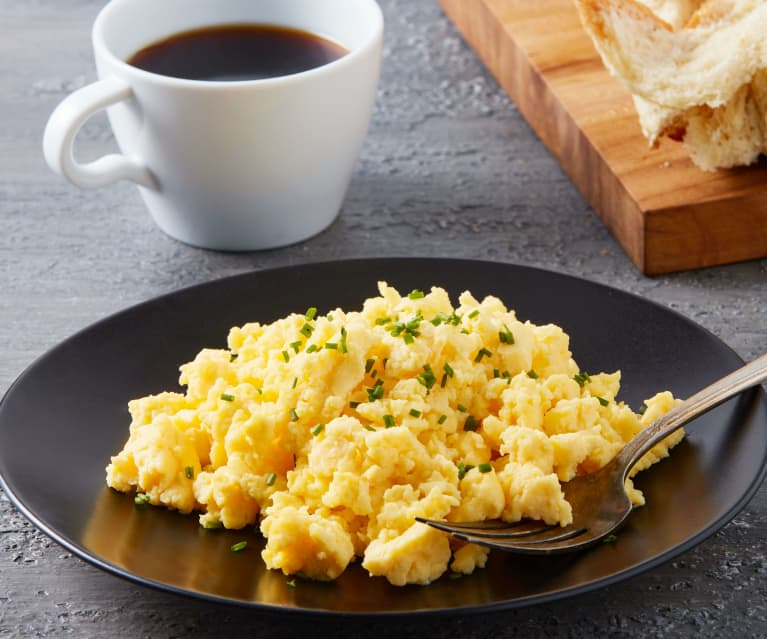

Delicious Scrambled Egg Recipe!

Description recipe
Savory scrambled eggs are satisfying for breakfast, lunch or even dinner.
This recipe includes multiple eggs.
Keep reading to find out how to make true scrambled eggs.
Ingredients
- 1.25 teaspoons salt (3 g)
- 8 large eggs
- 1 cup (8oz, 240ml) milk
- 1/4 cup (2 oz, 56g) butter
- 4 oz (112g) speck (smoked proscuitto) or bacon of your choice
- 4 oz (112g) young Gouda cheese or cheese of your choice
Steps
- In a large bowl, whisk together the egg, milk and salt.
- Heat a large (12") non-stick skillet over medium. Melt a teaspoon of butter and swirl to coat the pan.
- Pour 1/2 cup of the batter into the pan and swirl to create a large thin pancake that covers the bottom of the pan.
- Place several slices of the speck or bacon over the top of the pancake. Scramble the pancake.
- Scramble the eggs until they break apart. Flip back over so the speck is on top.
- Add a few slices of cheese, cover and allow the cheese to melt.
- Serve hot